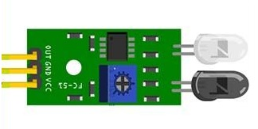

Sensor infrarrojo
Un detector de obstáculos infrarrojo es un dispositivo que detecta la presencia de un objeto mediante la reflexión que produce en la luz. El uso de luz infrarroja (IR) es simplemente para que esta no sea visible para los humanos.
Y estos, son los materiales que vamos a necesitar
cable dupont 
Placa Arduino uno 
Sensor infrarrojo 